Mes références
Objet
Igor Chak
Space Invader Couch
Les étagères Donkey Kong


Ces deux meubles sont des hommages à des anciens jeux : Space Invader et Donkey Kong.
Ils questionnent le passage de la 2 dimensions à la 3 dimensions.
Ron Arad
Le travail du relief dans l’espace
Do-Lo-Rez
Canapé


Charlotte Perriand
Découvert lors d’une exposition
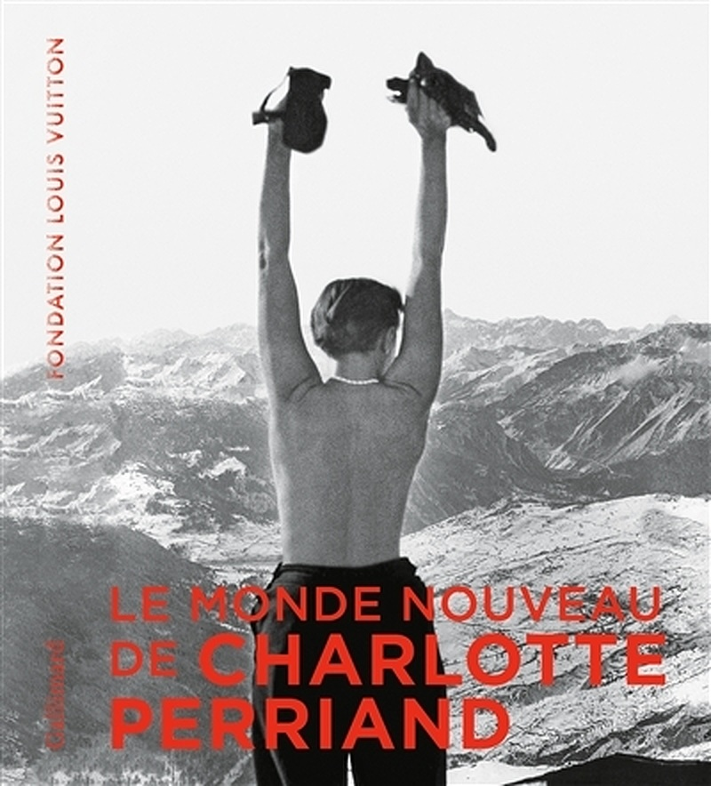Ce designer a beaucoup travaillé sur le confort à travers divers meubles :
La Chaise longue 522 Tokyo
Indochine
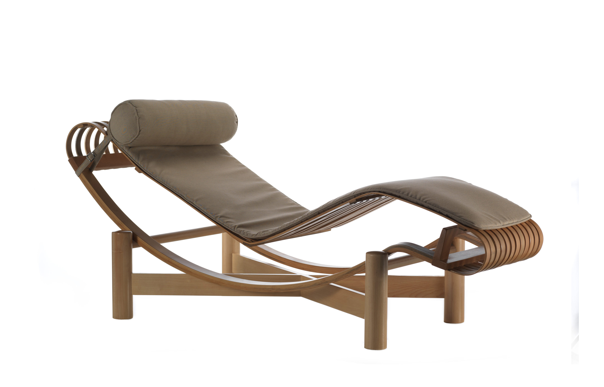 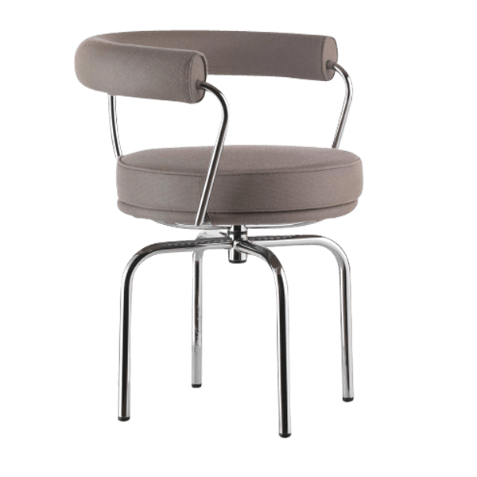Ces deux meubles sont des hommages à des anciens jeux : Space Invader et Donkey Kong.
Ils questionnent le passage de la 2 dimensions à la 3 dimensions.
Bijou de mur Volute Gold
Sophie Briand-Collet
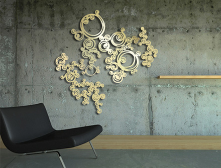La découpe laser m’intéresse pour ses multiples possibilités telle que la précision, la gravure, le passage de la 2d à la 3d, la diversité des matériaux mis en œuvre.
Virgil Abloh
Exposition efflorescence Paris 2020, j’ai trouvé vraiment intéressant que des objets représentant la rue soit placé dans un Musée.
366 cans challenge du studio blackthorns
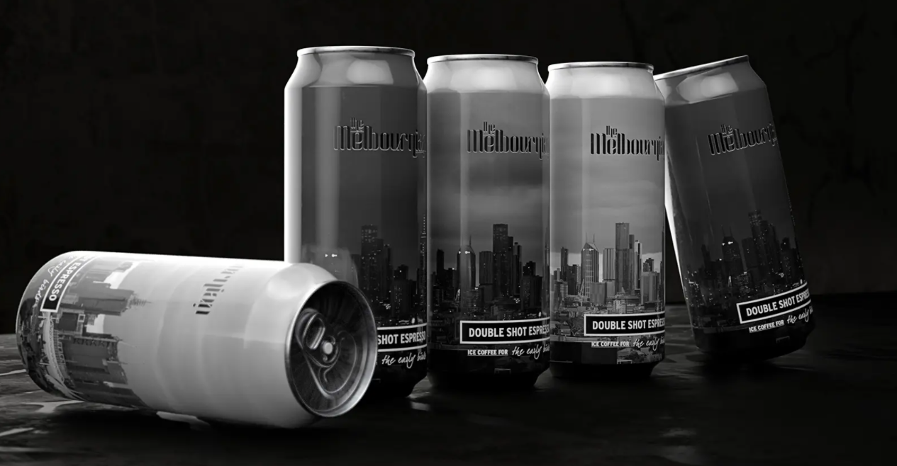 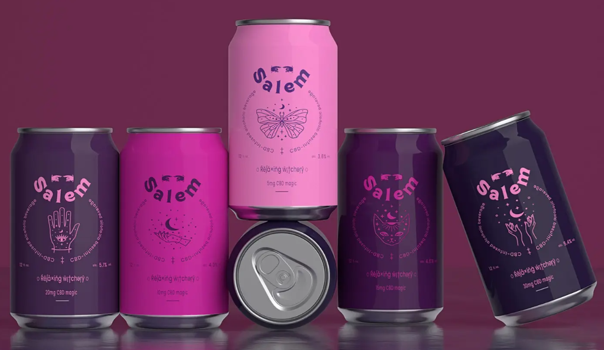 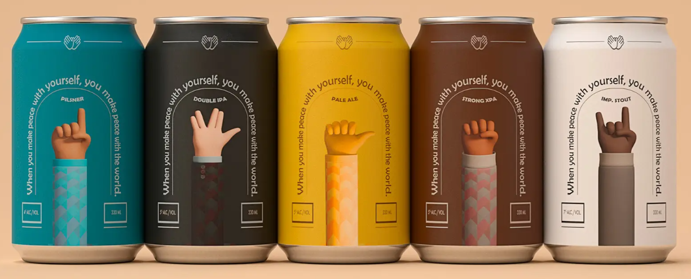Challenge mettant en honneur le graphisme des canettes.
Espace
Les frères Bouroullec Capellini clouds
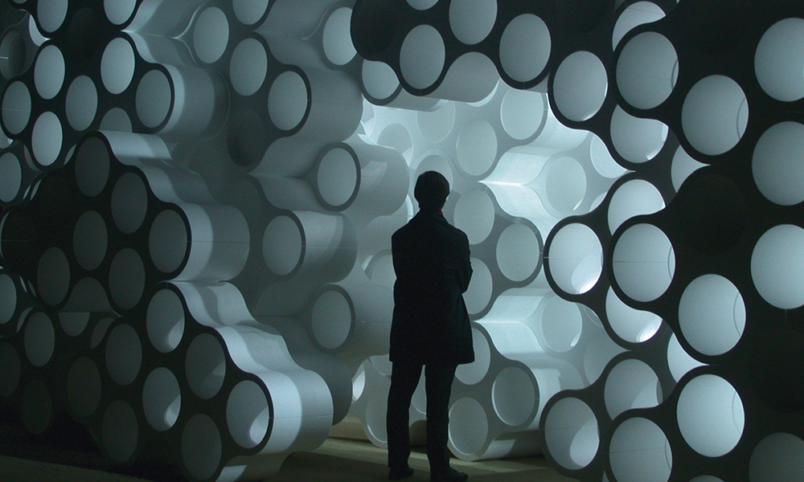A l’origine ce projet est un meuble, mais quand on en assemble plusieurs notre espace est transformé.
La Villa Savoye le Corbusier
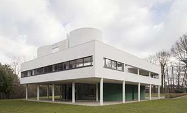Je trouve l’architecture de ce bâtiment que j’ai eu la chance de visiter vraiment intéressante
Animation
Peter Ramsey
Il a réalisé Spider Man New Génération et les 5 légendes
J’ai perdu mon corps
Jérémy Clapin
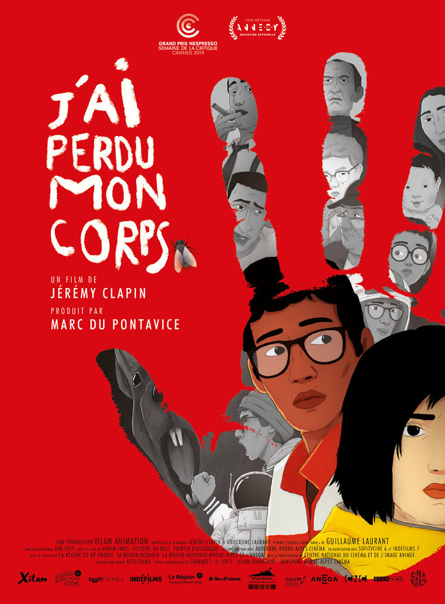J’aime beaucoup ce film, en partie pour ses différentes ambiances musicales.
Mode
Samuel Ross
J’ai découvert se designer grâce à ses engagements dans le développement durable<./p>
HOLYGRAIL
C’est que j’apprécie particulièrement pour leur approche à leur approche au streetwear.
La Prochaine sélection sont des collaborations entre des Artistes et Marques
Collaboration de l’artiste Stash avec Casio
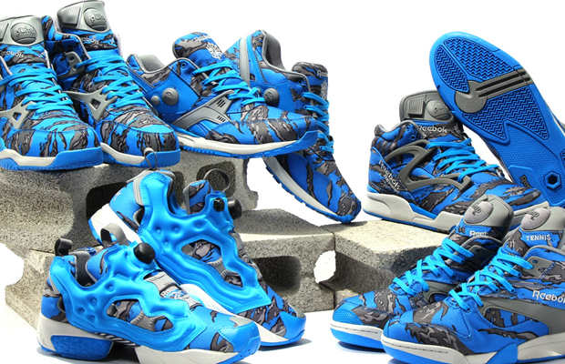Collaboration de l’artiste Stash avec Reeboks
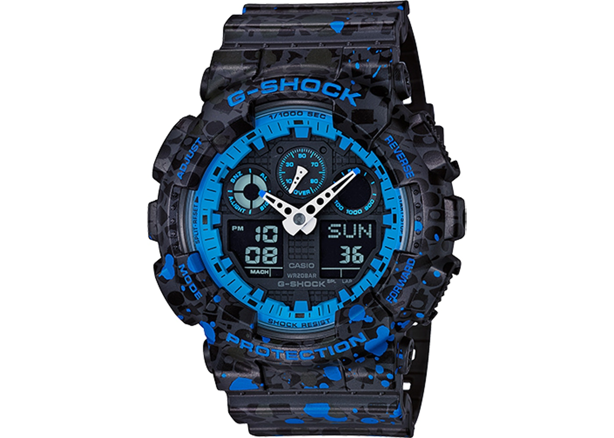Collaboration de l’artiste Kaws avec Uniqlo
Art
Invader
Cette œuvre nous présente des éléments virtuels dans nos rues.
Odeith
Jeu Vidéo
Genshin Impact
miHoYo studio de développement et d’animation de jeux vidéo

Sea of Thieves
Rare studio
J’aime beaucoup ce jeu pour ses graphismes mais aussi pour ses ambiances musicales